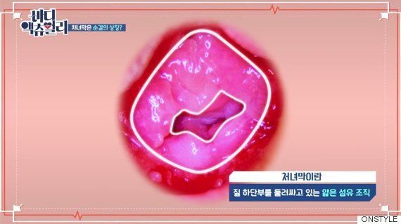

정의
질막이란 여성의 질 안쪽에 있는 판상형의 섬유 조직(막)으로, 월경혈이 나올 때 거치는 얇은 세포막이다.

속칭 '처녀막'이라고 불리우고 있으나 이는 여성의 순결 이데올로기(처녀성)에 기인한 여성혐오적인 표현이다. 질막은 이를 대체할 수 있는 표현으로, 2017년 7월 트위터 @Terrabozi 계정에서 진행된 '처녀막 대체어 찾기 프로젝트'에서 1위로 선정된 용어이다.1
오해
- 질막은 성관계시 '뚫어지는' 류의 폐쇄된 막이 아니다. 여성의 질에서는 매달 월경혈이 흘러나오는데 어떻게 완전히 봉쇄된 막이 그 안에 존재할 수 있겠는가? 질막은 원래 뚫려있는 판상형 조직이다. 완전히 막혀있는 경우는 질막 폐쇄증(처녀막 폐쇄증)으로 분류되며, 이는 치료가 필요한 병증이다.
- 성관계 여부와 상관 없이 자전거타기, 태권도의 발차기, 발레의 다리찢는 동작 등 운동으로 변형되기도 하고, 어떤 사람은 성관계가 불가능할 만큼 두꺼운 경우도 있다.2